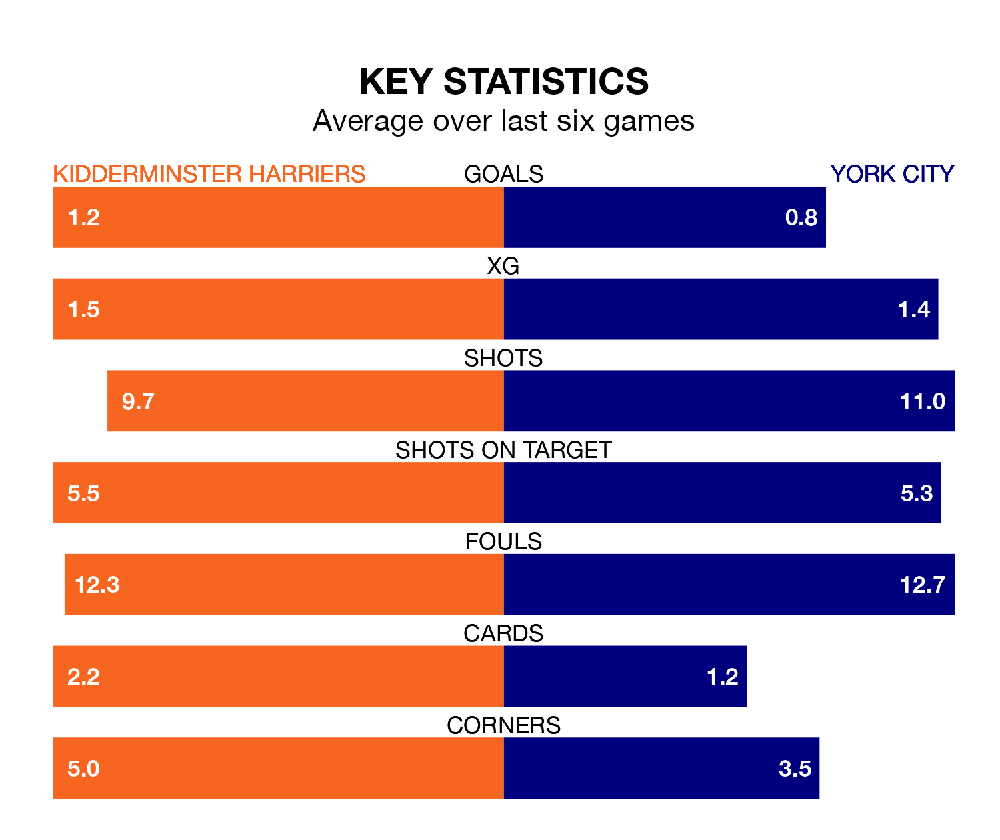

Saturday's match at the Aggborough Stadium sees two relegation candidates play each other, as 22nd-ranked Kidderminster Harriers host 23rd-placed York City.
Kidderminster Harriers have picked up 39 points from their first 39 National League games, with 10 wins and nine draws.
That is the same number of points as York have collected, having won eight and drawn 15.
Kidderminster Harriers are in mixed form in the National League, with three wins and a draw from their last six games.
With no wins and two draws over that period, York's form is much worse – they have taken two points from 18, compared to Kiddy's 10.
In the last 10 years, Kidderminster Harriers and York have played each other on 12 occasions. Kidderminster Harriers won six of them, York three, and they drew three times.
On average, Kiddy scored 1.6 goals and York 1.1 in those matches.
Their last meeting was on August 12, when Kidderminster Harriers won 1-0 away.
With 33 goals in 37 games so far this season, the home side are the league's lowest scorers with 0.9 goals per game. But they are conceding fewer than average too, letting in 46 goals at a rate of 1.2 per game.
City are also below average scorers, with 1.2 goals per game, compared to a league average of 1.5. They have conceded 1.6 goals per game.
Kidderminster Harriers's last match was on Tuesday, a 2-1 loss against Woking, with Jack Lambert getting the goal for Kiddy.
York lost 3-1 against Fylde last time out, also on Tuesday, with William Smith on the scoresheet.
Updated: 09:34 (UTC), 08/03/24